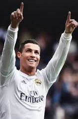
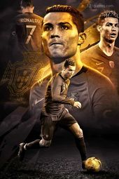

Cristiano Ronaldo ,widely recognized as CR7, is a global football icon known for his exceptional skill, unmatched professionalism, and relentless pursuit of excellence. The nickname "CR7" comes from the combination of his initials and his iconic jersey number, which he has worn at Manchester United, Real Madrid, and the Portugal national team. Renowned for his explosive speed, powerful shooting, aerial dominance, and versatility in attack, Ronaldo has redefined the modern forward’s role. Over his career, he has won multiple league titles, five UEFA Champions League trophies, and five Ballon d’Or awards, while becoming the all-time top scorer in both men’s international football and the UEFA Champions League.Off the pitch, CR7 has built a powerful personal brand, spanning fashion, hospitality, and fitness, while using his platform for philanthropy and inspiring millions worldwide through his discipline, resilience, and competitive spirit.
Cristiano Ronaldo’s is defined by an extraordinary list of achievements that cement his status as one of football’s greatest ever players. He has won five Ballon d’Or awards, recognizing him as the best player in the world on multiple occasions, and claimed five UEFA Champions League titles with Manchester United and Real Madrid. Ronaldo is the all-time top scorer in the Champions League , European Championship, and men’s international football, showcasing his consistency at the highest level. Domestically, he has secured league titles in England, Spain, and Italy, proving his adaptability across Europe’s toughest competitions. His individual milestones include over 850 career goals and numerous records for hat-tricks, assists, and appearances, making him a symbol of longevity, discipline, and unmatched competitive drive. |
 |
Cristiano Ronaldo, known more for his explosive power, precision, and efficiency than flair, has rarely used the rainbow kick in competitive matches. Unlike players such as Neymar or Ronaldinho, who often incorporate freestyle moves into their style, Ronaldo’s gameplay is built around directness, speed, and goal-scoring. However, during his early career at Manchester United and in training sessions, he occasionally showcased the rainbow kick, demonstrating his technical ability and versatility. These moments reflected his all-rounded skill set—proving that while he may not rely on flashy tricks during high-stakes games, he certainly possesses the control and creativity to execute them when needed. |
|  |